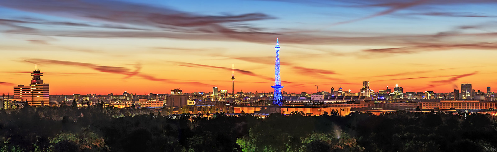
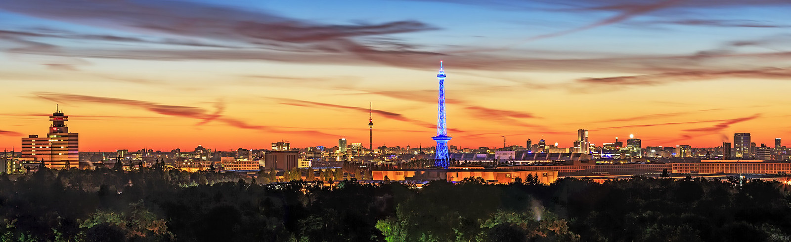

Germany is a Western European country with a landscape of forests, rivers, mountain ranges and North Sea beaches. It has over 2 millennia of history. Berlin, its capital, is home to art and nightlife scenes, the Brandenburg Gate and many sites relating to WWII. Munich is known for its Oktoberfest and beer halls, including the 16th-century Hofbräuhaus. Frankfurt, with its skyscrapers, houses the European Central Bank.


 
